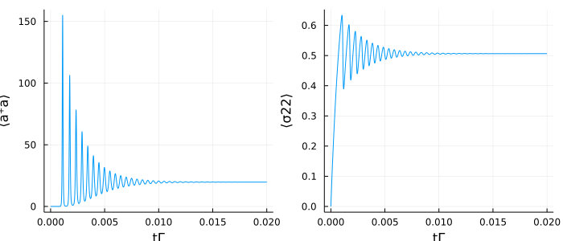
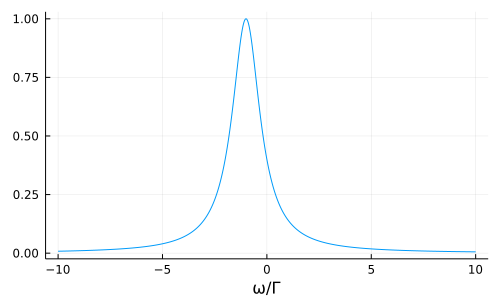

Superradiant Laser
Using symmetry properties of a system can reduce the number of needed equations dramatically. A common approximation for laser systems to handle sufficiently big atom numbers is to assume that several atoms in the system behave completely identically. This means all the identical atoms have the same averages.
In this example we describe a so-called superradiant laser, where we assume all atoms to be identical. This model has been described in D. Meiser et al., Phys. Rev. Lett. 102, 163601 (2009): The Hamiltonian of this system is
\[H = - \hbar \Delta a^\dagger a + \hbar \sum\limits_{j=1}^{N} g_j (a^\dagger \sigma^{12}_{j} + a \sigma^{21}_{j}),\]
where $\Delta = \omega_a - \omega_c$ is the detuning between the cavity ($\omega_c$) and the atomic ($\omega_a$) resonance frequency, the atom cavity coupling of the atom $j$ is denoted by $g_j$. Additionally there are dissipative processes in the system, namely: Atoms are incoherently pumped with the rate $R$, they decay individually with the rate $\Gamma$ and are affected by individual atomic dephasing with the rate $\nu$. Photons leak out of the system with the rate $\kappa$.
We start by loading the packages.
using QuantumCumulants
using OrdinaryDiffEq, SteadyStateDiffEq, ModelingToolkit
using PlotsTo give QuantumCumulants the information that several atoms behave identically we need to create a $\texttt{ClusterSpace}$ on the desired Hilbert space. This $\texttt{ClusterSpace}$ additionally needs the order $M$ of the system and a symbolic parameter for the number of identical elements $N$.
M = 2 # order
@cnumbers N Δ g κ Γ R ν
# Hilbertspace
hc = FockSpace(:cavity)
ha_ = NLevelSpace(:atom,2)
ha = ClusterSpace(ha_, N, M)
h = hc ⊗ haℋ(cavity) ⊗ Nxℋ(atom)
Now we can define the operators on the composite Hilbert space including the $\texttt{ClusterSpace}$, the workflow is completely the same as for 'normal' Hilbert spaces.
# operators
@qnumbers a::Destroy(h)
σ(i,j) = Transition(h, :σ, i, j, 2)
σ(2,2)2-element Vector{QSym}:
σ_122
σ_222What is different, however, is that the transition operator defined on the $\texttt{ClusterSpace}$ is an array of $M$ transitions defined on internally created sub-Hilbert spaces. The reason for this is the following: Although we assume all atoms to be identical, we still need to keep track of the correlations between different atoms. Since $\langle \sigma^{21}_1 \sigma^{12}_1 \rangle = \langle \sigma^{22}_1 \rangle$ is obviously not equal to $\langle \sigma^{21}_1 \sigma^{12}_2 \rangle$ at least a second atom is needed for a second order description. On the other hand, as all atoms are the same, it must hold that $\langle \sigma^{21}_1 \sigma^{12}_2 \rangle = \langle \sigma^{21}_\alpha \sigma^{12}_\beta \rangle$ for all $\alpha \ne \beta$, therefore two atoms are sufficient. For higher orders and or bosonic operators the arguments are the same.
The symbolic calculation rules for these operators acting on a $\texttt{ClusterSpace}$ are implemented such that e.g. $\sum\limits_j \sigma^{22}_j$ can be written as $sum(\sigma(2,2))$ in the code. For the jump operators the syntax is such that individual atomic dissipation is written as $J = [σ(i,j)]$, whereas collective behaviour is expressed as $J = sum(σ(i,j))$. The Hamiltonian and the dissipative processes for individual atomic behaviour are therefore
# Hamiltonian
H = -Δ*a'a + g*(a'*sum(σ(1,2)) + a*sum(σ(2,1)))
# Jump operators & rates
J = [a, σ(1,2), σ(2,1), σ(2,2)]
rates = [κ, Γ, R, ν]First we want to derive the equation for $\langle a^\dagger a \rangle$ and $\langle \sigma_1^{22} \rangle$. $\texttt{QuantumCumulants}$ automatically sets the right scaling factors in the equations to account for the number of identical atoms and also replaces redundant averages, e.g. $\langle \sigma_2^{22} \rangle$ is replaced by $\langle \sigma_1^{22} \rangle$ in the equations, since all atoms behave identically these two averages are the same.
# Derive equations
ops = [a'*a, σ(2,2)[1]]
eqs = meanfield(ops,H,J;rates=rates,order=M)\[\begin{align} \frac{d}{dt} \langle a^\dagger a\rangle =& -1.0 \kappa \langle a^\dagger a\rangle -1.0 i N g \langle a^\dagger {\sigma_1}^{{12}}\rangle + 1.0 i N g \langle a {\sigma_1}^{{21}}\rangle \\ \frac{d}{dt} \langle {\sigma_1}^{{22}}\rangle =& R -1.0 R \langle {\sigma_1}^{{22}}\rangle + 1 i g \langle a^\dagger {\sigma_1}^{{12}}\rangle -1 i g \langle a {\sigma_1}^{{21}}\rangle -1.0 \Gamma \langle {\sigma_1}^{{22}}\rangle \end{align}\]
To get a closed set of equations we automatically complete the system. Since this system is phase invariant we know that all averages with a phase are zero, therefore we exclude these terms with a filter function.
# custom filter function
φ(x::Average) = φ(x.arguments[1])
φ(::Destroy) = -1
φ(::Create) =1
φ(x::QTerm) = sum(map(φ, x.args_nc))
φ(x::Transition) = x.i - x.j
phase_invariant(x) = iszero(φ(x))
# Complete equations
eqs_c = complete(eqs; filter_func=phase_invariant)\[\begin{align} \frac{d}{dt} \langle a^\dagger a\rangle =& -1.0 \kappa \langle a^\dagger a\rangle -1.0 i N g \langle a^\dagger {\sigma_1}^{{12}}\rangle + 1.0 i N g \langle a {\sigma_1}^{{21}}\rangle \\ \frac{d}{dt} \langle {\sigma_1}^{{22}}\rangle =& R -1.0 R \langle {\sigma_1}^{{22}}\rangle + 1 i g \langle a^\dagger {\sigma_1}^{{12}}\rangle -1 i g \langle a {\sigma_1}^{{21}}\rangle -1.0 \Gamma \langle {\sigma_1}^{{22}}\rangle \\ \frac{d}{dt} \langle a^\dagger {\sigma_1}^{{12}}\rangle =& -0.5 R \langle a^\dagger {\sigma_1}^{{12}}\rangle + 1 i g \langle {\sigma_1}^{{22}}\rangle -1 i g \langle a^\dagger a\rangle -0.5 \Gamma \langle a^\dagger {\sigma_1}^{{12}}\rangle -1 i \Delta \langle a^\dagger {\sigma_1}^{{12}}\rangle -0.5 \kappa \langle a^\dagger {\sigma_1}^{{12}}\rangle -0.5 \nu \langle a^\dagger {\sigma_1}^{{12}}\rangle + 2 i g \langle {\sigma_1}^{{22}}\rangle \langle a^\dagger a\rangle + 1 i g \langle {\sigma_1}^{{21}} {\sigma_2}^{{12}}\rangle \left( -1 + N \right) \\ \frac{d}{dt} \langle {\sigma_1}^{{21}} {\sigma_2}^{{12}}\rangle =& -1.0 R \langle {\sigma_1}^{{21}} {\sigma_2}^{{12}}\rangle + 1 i g \langle a^\dagger {\sigma_1}^{{12}}\rangle -1 i g \langle a {\sigma_1}^{{21}}\rangle -1.0 \Gamma \langle {\sigma_1}^{{21}} {\sigma_2}^{{12}}\rangle -1.0 \nu \langle {\sigma_1}^{{21}} {\sigma_2}^{{12}}\rangle -2 i g \langle {\sigma_1}^{{22}}\rangle \langle a^\dagger {\sigma_1}^{{12}}\rangle + 2 i g \langle {\sigma_1}^{{22}}\rangle \langle a {\sigma_1}^{{21}}\rangle \end{align}\]
To calculate the dynamics of the system we create a system of ordinary differential equations, which can be used by DifferentialEquations.jl.
@named sys = ODESystem(eqs_c)Finally we need to define the numerical parameters and the initial state of the system. We will consider $2 \cdot 10^5$ Strontium atoms which are repumped with a rate of $R = 1\text{Hz}$ on the clock transition ($\Gamma = 1 \text{mHz}$). The atom-cavity coupling rate is $g = 1\text{Hz}$, the cavity has a linewidth of $\kappa = 5\text{kHz}$ and is detuned from the atomic resonance by $\Delta = 2.5\text{Hz}$.
# Initial state
u0 = zeros(ComplexF64, length(eqs_c))
# System parameters
N_ = 2e5
Γ_ = 1.0 #Γ=1mHz
Δ_ = 2500Γ_ #Δ=2.5Hz
g_ = 1000Γ_ #g=1Hz
κ_ = 5e6*Γ_ #κ=5kHz
R_ = 1000Γ_ #R=1Hz
ν_ = 1000Γ_ #ν=1Hz
ps = [N, Δ, g, κ, Γ, R, ν]
p0 = [N_, Δ_, g_, κ_, Γ_, R_, ν_]
prob = ODEProblem(sys,u0,(0.0, 1.0/50Γ_), ps.=>p0)sol = solve(prob,Tsit5(),maxiters=1e7)# Plot time evolution
t = sol.t
n = real.(sol[a'a])
s22 = real.(sol[σ(2,2)[1]])
# Plot
p1 = plot(t, n, xlabel="tΓ", ylabel="⟨a⁺a⟩", legend=false)
p2 = plot(t, s22, xlabel="tΓ", ylabel="⟨σ22⟩", legend=false)
plot(p1, p2, layout=(1,2), size=(700,300))
Spectrum
We calculate the spectrum here with the Laplace transform of the two-time correlation function. This is implemented with the function $\texttt{Spectrum}$.
corr = CorrelationFunction(a', a, eqs_c; steady_state=true, filter_func=phase_invariant)
S = Spectrum(corr, ps)The set of equations for the correlation function is given by
corr.de\[\begin{align} \frac{d}{d\tau} \langle a^\dagger a_0\rangle =& -1 i \Delta \langle a^\dagger a_0\rangle -0.5 \kappa \langle a^\dagger a_0\rangle + 1.0 i N g \langle {\sigma_1}^{{21}} a_0\rangle \\ \frac{d}{d\tau} \langle {\sigma_1}^{{21}} a_0\rangle =& -0.5 R \langle {\sigma_1}^{{21}} a_0\rangle + 1 i g \langle a^\dagger a_0\rangle -0.5 \Gamma \langle {\sigma_1}^{{21}} a_0\rangle -0.5 \nu \langle {\sigma_1}^{{21}} a_0\rangle -2 i g \langle {\sigma_1}^{{22}}\rangle \langle a^\dagger a_0\rangle \end{align}\]
To ensure we are in the steady state we use a steady solver to calculate it. To this end we need to define the $\texttt{SteadyStateProblem}$ and specify the desired method. We also need to increase the $\texttt{maxiters}$ and the solver accuracy to handle this numerically involved problem.
prob_ss = SteadyStateProblem(prob)
sol_ss = solve(prob_ss, DynamicSS(Tsit5(); abstol=1e-8, reltol=1e-8),
reltol=1e-14, abstol=1e-14, maxiters=5e7)The spectrum is then calculated with
ω = [-10:0.01:10;]Γ_
spec = S(ω,sol_ss.u,p0)
spec_n = spec ./ maximum(spec)
δ = abs(ω[(findmax(spec)[2])])1.0
plot(ω, spec_n, xlabel="ω/Γ", legend=false, size=(500,300))
Beside the narrow linewidth we can also see another key feature of the superradiant laser here, namely the very weak cavity pulling. At a detunig of $\Delta = 2500\Gamma$ there is only a shift of the laser light from the atomic resonance frequency of $\delta = 1\Gamma$.
The implementation of the scaling rules are still in an early stage of development and they are quite 'experimental'. So make sure to double check the equations when using them in more complicated systems.